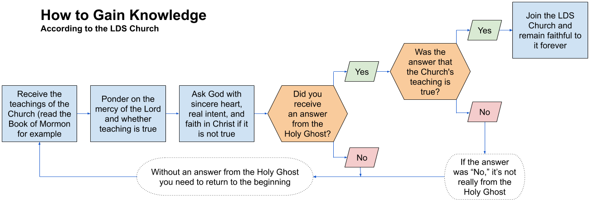

| Book of Mormon |
Annotations |
|
Chapter 10
|
|
|
1 Now I, Moroni, write somewhat as seemeth me good; and I
write unto my brethren, the Lamanites; and I would that they should know
that more than four hundred and twenty years have passed away since the sign
was given of the coming of Christ.
|
Past LDS leaders and various references in the Doctrine
and Covenants make it clear that the Lamanites Moroni is writing to were the
Native Americans (as well as Pacific Islanders according to the leaders).
Now, LDS leaders won’t tell us who the Lamanites are. Just who is it that
Moroni is writing to?
|
|
2 And I seal up these records, after I have spoken a few
words by way of exhortation unto you.
|
|
|
3 Behold, I would exhort you that when ye shall read these
things, if it be wisdom in God that ye should read them, that ye would
remember how merciful the Lord hath been unto the children of men, from the
creation of Adam even down until the time that ye shall receive these things,
and ponder it in your hearts.
|
Notice that the author of the verse asks the reader to
ponder but not to ponder on the evidence or the merits of the material read.
Rather the author exhorts the reader to ponder on how merciful the Lord has
been. The reader is reminded of a debt of gratitude. As a social being, a
normal human will want to reciprocate the mercy spoken of, so if the reader
believes this mercy has been extended, it primes the reader to want to do
what the Lord desires, and implicit here is that these things are given to
the reader in the wisdom of God—that God wants the reader to accept these
things. This desire to reciprocate would tend to lead to a desire to believe
regardless of the material being presented and its merits. Reasoning
motivated by something other than the desire to understand the truth is
called motivated reasoning, and motivated reasoning leads to all sort of
beliefs that are not justified by reason or evidence and that often
contradict one another.
|
|
4 And when ye shall receive these things, I would exhort
you that ye would ask God, the Eternal Father, in the name of Christ, if
these things are not true; and if ye shall ask with a sincere heart, with
real intent, having faith in Christ, he will manifest the truth of it unto
you, by the power of the Holy Ghost.
|
If this process doesn’t work to let you know that the Book
of Mormon is God’s word and will, then it is your fault. Built right into
this verse are reasons believers can always use to explain why a person didn’t
get the “right” answer. The person who doesn’t get the accepted answer didn’t
ask with enough sincerity, real intent, and/or faith. So if you set up any
truth claim with this process as the way to gain knowledge of the claim, the
believers will always think they know why nonbelievers didn’t get the “right”
answer. (see diagram below)
This type of situation is often called a double bind—a situation in which you
are given a choice or dilemma, but there is no good choice. Either way, you
fail.
If someone asks if the Book of Mormon is true and concludes it is not what it
claims, according to these verses, they failed to ask with sincerity, real
intent, and/or having faith in Christ. The dilemma is that they either stop
trying to believe and are accused of these failures, or they continue trying
to believe even if they have done their due diligence.
Consider the effect of Jehovah’s Witness (JW) missionaries teaching a person
they will know the JW Church is Jehovah’s only authorized organization if
they ask Jehovah with a sincere heart, with real intent, and having faith in
Jehovah. What kind of effect or influence might this have on a person
studying with the Jehovah’s Witnesses?
Which leader said this about asking God if a teaching is
true?
I hope for your sake that you at least ponder this—that
you go into the privacy of your closet. Don’t ask your neighbors, your
friends what they think of this. You go see if you can connect with the
purest, the highest source that you might consider God and say, “What about
this? Is this for real? Is this for me? If it is, then give me the strength,”
because as soon as you tell anyone else, they will be used as the instruments
to have you not believe.
(It was Marshall Applewhite, leader of the UFO cult
Heaven’s Gate who convinced himself and 38 others to commit suicide in March
1997. The quote starts at about 56:14 in this video, www.youtube.com/watch?v=JC0tqZfMv34&app=desktop)
The LDS Church teaches that prayer is how you can know if
it is God’s will that you join the Church. But, “A common technique among
religious cults is to instruct people to ask God what He wants them to do.
Members are exhorted to study and pray in order to know God’s will for them” (Steven
Hassan, Combatting Cult Mind Control, p. 70).
|
|  |
|
5 And by the power of the Holy Ghost ye may know the truth
of all things.
|
If the power of the Holy Ghost were a reliable way to
discern the truth, why are there many examples of the Spirit of God
convincing people that their Church is God’s only true church; here is
just one video with many examples: www.youtube.com/watch?v=ycUvC9s4VYA
|
|
6 And whatsoever thing is good is just and true;
wherefore, nothing that is good denieth the Christ, but acknowledgeth that he
is.
|
|
|
7 And ye may know that he is, by the power of the Holy
Ghost; wherefore I would exhort you that ye deny not the power of God; for he
worketh by power, according to the faith of the children of men, the same
today and tomorrow, and forever.
|
|
|
8 And again, I exhort you, my brethren, that ye deny not
the gifts of God, for they are many; and they come from the same God. And
there are different ways that these gifts are administered; but it is the
same God who worketh all in all; and they are given by the manifestations of
the Spirit of God unto men, to profit them.
|
|
|
9 For behold, to one is given by the Spirit of God, that
he may teach the word of wisdom;
|
|
|
10 And to another, that he may teach the word of knowledge
by the same Spirit;
|
|
|
11 And to another, exceedingly great faith; and to
another, the gifts of healing by the same Spirit;
|
|
|
12 And again, to another, that he may work mighty
miracles;
|
|
|
13 And again, to another, that he may prophesy concerning
all things;
|
|
|
14 And again, to another, the beholding of angels and
ministering spirits;
|
|
|
15 And again, to another, all kinds of tongues;
|
This is one of my favorite gifts of the Spirit as far as
how its understanding has evolved in the Church. In Joseph Smith’s day, it
was as described in the Bible, people talking spontaneously in a language
they have no prior knowledge of. Now of days the term is used to describe
those who train extensively in a language, speak it, and people may or may
not understand what they are saying. Even when I was a true blue Mormon, I
had to resist rolling my eyes when other believers would talk about how the
missionaries had the gift of tongues when they spoke the language they had
been training in for weeks or months.
(See also 3 Ne 29:6-7 and Mormon 9:7)
|
|
16 And again, to another, the interpretation of languages
and of divers kinds of tongues.
|
|
|
17 And all these gifts come by the Spirit of Christ; and
they come unto every man severally, according as he will.
|
|
|
18 And I would exhort you, my beloved brethren, that ye
remember that every good gift cometh of Christ.
|
|
|
19 And I would exhort you, my beloved brethren, that ye
remember that he is the same yesterday, today, and forever, and that all
these gifts of which I have spoken, which are spiritual, never will be done
away, even as long as the world shall stand, only according to the unbelief
of the children of men.
|
|
|
20 Wherefore, there must be faith; and if there must be
faith there must also be hope; and if there must be hope there must also be
charity.
|
|
|
21 And except ye have charity ye can in nowise be saved in
the kingdom of God; neither can ye be saved in the kingdom of God if ye have
not faith; neither can ye if ye have no hope.
|
|
|
22 And if ye have no hope ye must needs be in despair; and
despair cometh because of iniquity.
|
Sometimes despair comes from bad behavior, but other times
despair comes because of mental health conditions which have biological
causes or physical catastrophe that no one had control over.
Because this teaching is so simplistic and often presented
without further nuance, I think it causes a lot of harm.
|
|
23 And Christ truly said unto our fathers: If ye have
faith ye can do all things which are expedient unto me.
|
|
|
24 And now I speak unto all the ends of the earth—that
if the day cometh that the power and gifts of God shall be done away among
you, it shall be because of unbelief.
|
Moroni 10:24-26
This seems to appeal to fear and to blame the observer if no miracle is seen.
|
|
25 And wo be unto the children of men if this be the
case; for there shall be none that doeth good among you, no not one. For
if there be one among you that doeth good, he shall work by the power and
gifts of God.
|
Annotation for Moroni 10:24-26 above
|
|
26 And wo unto them who shall do these things away and
die, for they die in their sins, and they cannot be saved in the kingdom of
God; and I speak it according to the words of Christ; and I lie not.
|
Annotation for Moroni 10:24-26 above
|
|
27 And I exhort you to remember these things; for the time
speedily cometh that ye shall know that I lie not, for ye shall see me at the
bar of God; and the Lord God will say unto you: Did I not declare my words
unto you, which were written by this man, like as one crying from the dead,
yea, even as one speaking out of the dust?
|
|
|
28 I declare these things unto the fulfilling of the
prophecies. And behold, they shall proceed forth out of the mouth of the
everlasting God; and his word shall hiss forth from generation to generation.
|
|
|
29 And God shall show unto you, that that which I have
written is true.
|
|
|
30 And again I would exhort you that ye would come unto
Christ, and lay hold upon every good gift, and touch not the evil gift, nor
the unclean thing.
|
|
|
31 And awake, and arise from the dust, O Jerusalem; yea,
and put on thy beautiful garments, O daughter of Zion; and strengthen thy
stakes and enlarge thy borders forever, that thou mayest no more be
confounded, that the covenants of the Eternal Father which he hath made unto
thee, O house of Israel, may be fulfilled.
|
|
|
32 Yea, come unto Christ, and be perfected in him, and
deny yourselves of all ungodliness; and if ye shall deny yourselves of all
ungodliness, and love God with all your might, mind and strength, then is his
grace sufficient for you, that by his grace ye may be perfect in Christ; and
if by the grace of God ye are perfect in Christ, ye can in nowise deny the
power of God.
|
|
|
33 And again, if ye by the grace of God are perfect in
Christ, and deny not his power, then are ye sanctified in Christ by the grace
of God, through the shedding of the blood of Christ, which is in the covenant
of the Father unto the remission of your sins, that ye become holy, without
spot.
|
|
|
34 And now I bid unto all, farewell. I soon go to rest in
the paradise of God, until my spirit and body shall again reunite, and I am
brought forth triumphant through the air, to meet you before the pleasing bar
of the great Jehovah, the Eternal Judge of both quick and dead. Amen.
|
|